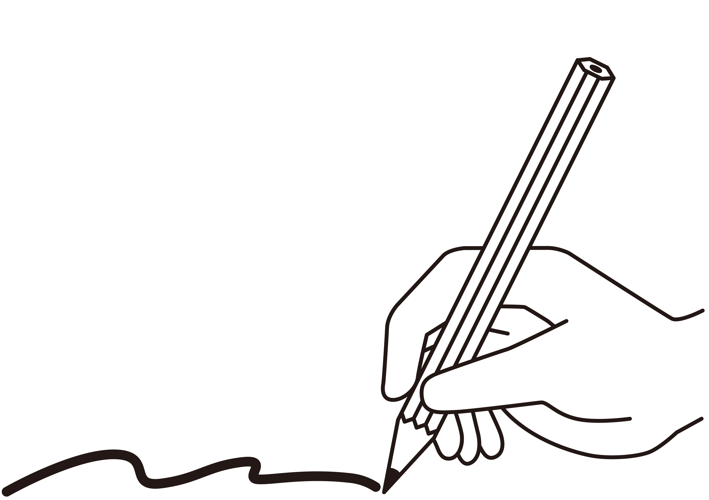
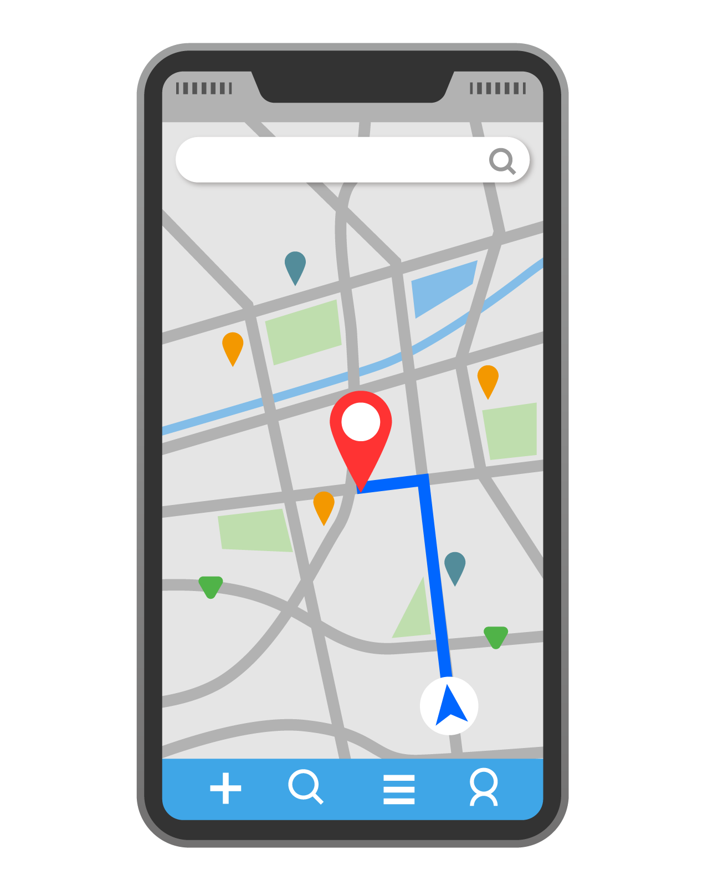
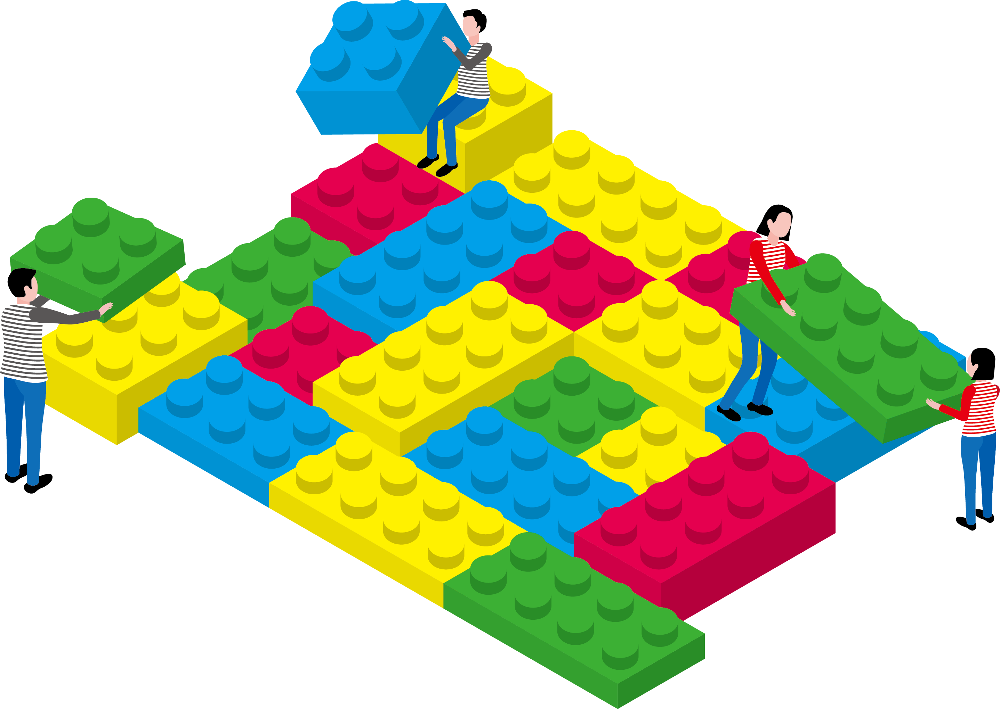

My Portfolio
基本情報
はじめまして 若田部怜司と申します。
栃木在住の26歳です。
レスポンシブデザインとUIを特に意識してサイトを作成しました。
GitHub - https://github.com/waka421
スキル
- 資格
- HTML5プロフェッショナル認定試験レベル1 81/100
- 基本情報技術者 科目A:705/1000 科目B:675/1000
- ITパスポート 770/1000
- 英検2級
- 勉強中
- HTML/CSS
- JavaScript
- PHP
- レスポンシブWebデザイン
- UI/UX
- SEO
- GitHub
- vude.js
- 応用情報技術者
勉強中
- 4月:まずはITパスポートから
- ITの右も左も分からない状態からスタート。初めて聞く単語や概念を目の当たりにし、新しい世界に夢中になる。
- 5月:ステップアップに基本情報技術者へ
- 一気に難しくなる。初めは何も分からなかった科目Bの擬似言語を毎日紙とペンでトレースして克服。
- 6月:HTML/CSS,JavaScriptの学習へ
- ドットインストールでの座学と資格取得の同時並行。資格取得の過程でAPIやSEO,レスポンシブWebデザインも学習が出来た。
- 7月:ポートフォリオ作成
- webサイト作成の大変さと思い通りに動いた時の感動を経験する。実際に動かしてみてしっくりくる配置やタイミングなどのUIを意識して作成。この過程が一番楽しく、ふと気が付くと何時間も経っている。


